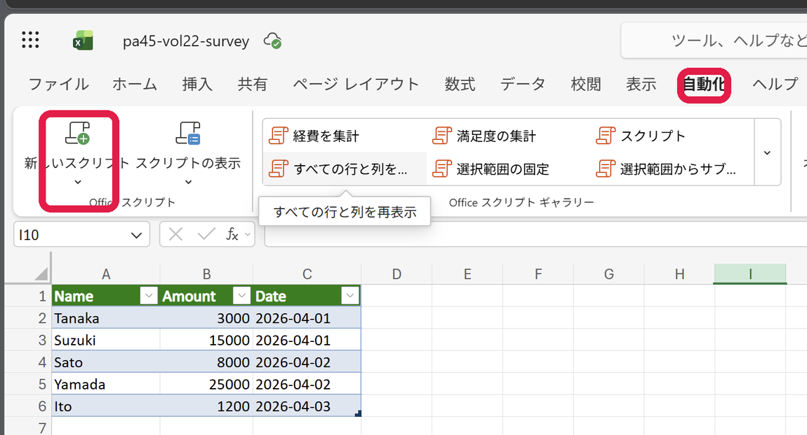
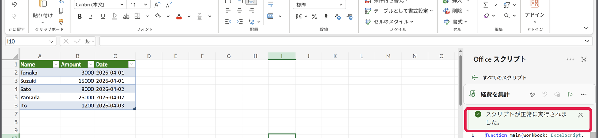
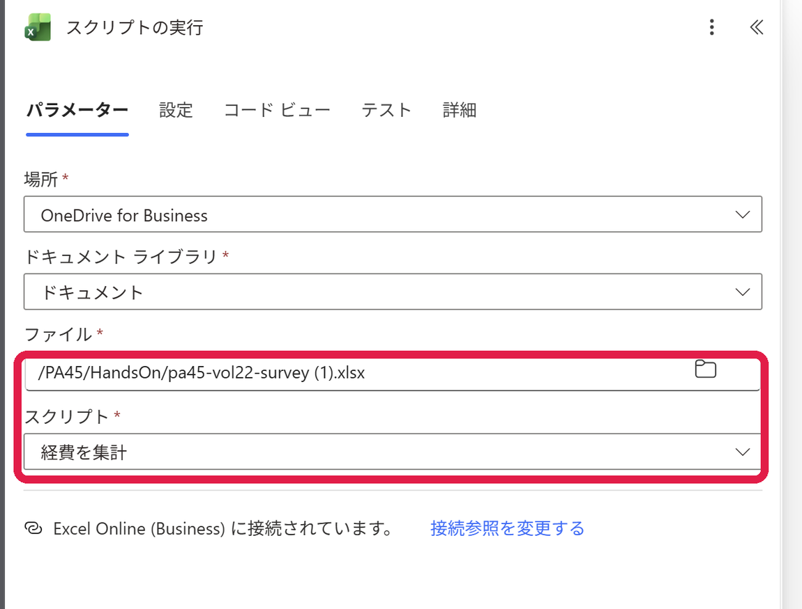
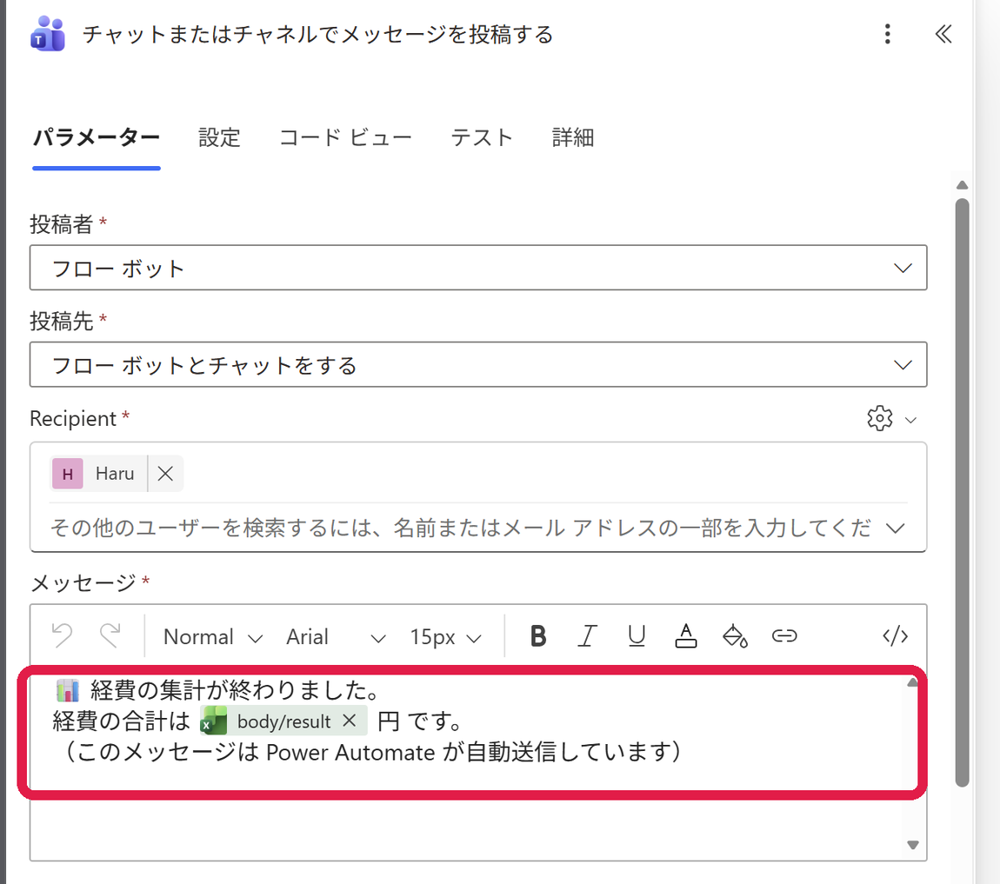
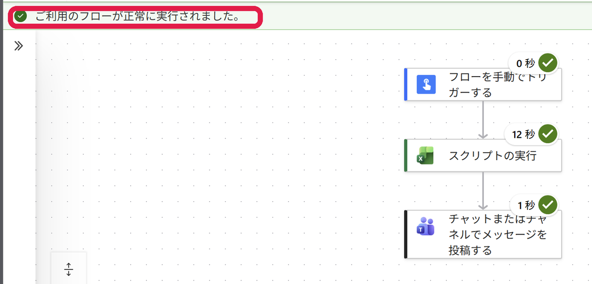

PA45 第23回｜ハンズオン手順
Officeスクリプトの「答え」で、フローを分岐させる経費の合計をスクリプトで出し、金額で「上長に承認依頼」か「自動承認」かを自動で振り分けます。順番どおりに進めればできます。
今日つくるもの： Excelの経費（Amount）を合計し、その金額で行き先が変わるフロー。
5万円より大きければ上長に承認依頼、そうでなければ
自動承認を通知します。
🖱️ ボタンで開始→
⚙️ スクリプトで合計→
🔀 5万円より大きい？→
🙋 承認依頼
/
✅ 自動承認
⬇
まず最初に：サンプルExcelをダウンロード
pa45-vol23-expense.xlsx（経費表 ExpenseTable・合計52,200円）／クリックすると Excel がそのまま開けます
🔰 初参加の方へ： 前回（第22回）の続きですが、ここから始めても大丈夫です。STEP A・B で「合計を返すスクリプト」を用意し、STEP C で今日の主役「条件で分岐」を作ります。
STEP 0
準備（サンプルExcel＋Copilotを開く）
サンプルの経費表（ExpenseTable）を OneDrive に置き、ブラウザのExcelと M365 Copilot チャットを開きます。
⬇ サンプルExcel（経費表 ExpenseTable）をダウンロード
- ダウンロードした pa45-vol23-expense.xlsx を、OneDrive（職場・学校）にアップロードします。
- 迷ったら OneDrive の PA45 フォルダに入れておくと、あとで探しやすいです。
- OneDrive でそのファイルをクリックして開く（ブラウザのExcelで開きます）。表の名前は「ExpenseTable」、列は Name／Amount／Date です。
- 別のタブで M365 Copilot チャットを開いておきます（職場・学校アカウントでサインインした Copilot）。
⚠️ 「自動化」タブが出ないときは：
- 会社・学校アカウント（法人・教育の Microsoft 365）でサインインしているか確認（個人向け Personal・Family は非対応）。
- ファイルは OneDrive for Business / SharePoint に置いたものを開く（ローカルや個人 OneDrive はNG）。
- それでも出なければ、管理者が Officeスクリプト をオフにしている可能性（情シスへ確認）。
STEP A
スクリプトに「合計（答え）」を返させる
コードは書きません。Copilotに日本語で頼むだけ。今日の肝は「合計を返す（return）」ようにすること。この戻り値を、あとで条件の判定に使います。
- M365 Copilot チャットの入力欄に、下の 「お願い文」をコピーして貼り付けます。
- 続けて、Excelの表（見出し＋データ）をコピーして貼り付けます（Name・Amount・Date）。
- 表をドラッグ → Ctrl+C → Copilotの入力欄で Ctrl+V。
- 送信すると Copilot が Officeスクリプトを書いてくれます。そのコードをコピーします（STEP B で使います）。
🟣 Copilotへのお願い文（コピーして貼る）
次のExcelの表について、Officeスクリプト（ExcelScript / TypeScript）を書いてください。
・表の名前は「ExpenseTable」（列：Name・Amount・Date）
・「Amount」列の合計を計算する
・見出し行を緑色＋白文字（太字）にする
・合計を、表の2つ下のセルに「合計 Amount」というラベルと並べて書き出し、そのセルを黄色に着色する
・計算した合計を、関数の戻り値（return）として返す ← Power Automateの「条件」で使うため
main関数の戻り値の型は number にしてください。
💡 一番大事なのは最後の一行：「合計を戻り値(return)で返す」。これが無いと、フローが答えを受け取れず、分岐そのものができません。だからお願い文に必ず入れておきます。
⚠️ AIのコードは、たまに一発で動かないことがあります。 エラーが出たら、次の STEP B の 「完成版（お守り）」を貼ればOK。
STEP B
Excel に貼って、保存して実行
Copilot が書いたコードを、Excelの「自動化」タブに貼って動かします。
- Excel（Web）→ 自動化 タブ →「新しいスクリプト」を選びます。
- 最初から入っているコードをすべて消して、STEP A で Copilot が書いたコードを貼り付けます。
- スクリプト名を 「経費の合計」 に変更し、「スクリプトの保存」を押します。
- 「実行」を押して、見出しに色がつき、表の下に合計（52,200）が書き出されるか確認します。

実画面：「自動化」タブ →「新しいスクリプト」。表は ExpenseTable（Name・Amount・Date）。
🛟 完成版（お守り）： Copilot の結果がうまく動かないときは、下のコードをそのまま貼れば必ず動きます。合計を計算し、戻り値でも返します。
経費の合計（完成版・お守り）
function main(workbook: ExcelScript.Workbook): number {
// 表「ExpenseTable」を取得（無ければ最初の表）
let table = workbook.getTable("ExpenseTable");
if (!table) { table = workbook.getTables()[0]; }
// ① 見出し行に色をつける（緑＋白字・太字）
const header = table.getHeaderRowRange();
header.getFormat().getFill().setColor("#217346");
const headerFont = header.getFormat().getFont();
headerFont.setColor("#FFFFFF");
headerFont.setBold(true);
// ②「Amount」列の合計を計算
const headerValues = header.getValues()[0].map(v => String(v));
const amountIndex = headerValues.indexOf("Amount");
const bodyValues = table.getRangeBetweenHeaderAndTotal().getValues();
let sum = 0;
for (const row of bodyValues) {
const n = Number(row[amountIndex]);
if (!isNaN(n)) { sum += n; }
}
// ③ 表の2つ下に「合計 Amount」＋数値を書き出す
const below = table.getRange().getLastRow().getOffsetRange(2, 0);
below.getCell(0, 0).setValue("合計 Amount");
const totalCell = below.getCell(0, 1);
totalCell.setValue(sum);
totalCell.getFormat().getFont().setBold(true);
totalCell.getFormat().getFill().setColor("#FFF7ED");
// ④ 合計を返す（フローの条件で使う）
return sum;
}
⬇ 完成版スクリプトをファイルでダウンロード

実画面：「実行」して スクリプトが正常に実行されました と出ればOK。表の下に合計が入ります。
STEP C
「条件」で分岐するフローを作る
make.powerautomate.com で手動フローを1本作ります。スクリプトの戻り値（合計）を「条件」で受けて、行き先を「はい／いいえ」に分けます。
C-1. スクリプトを呼んで「答え」を受け取る
- 左メニューの 「作成」 →「インスタント クラウド フロー」を選びます。
- フロー名を 「Vol23 経費を金額で振り分け」 などに。トリガーは 「フローを手動でトリガーします」を選び、「作成」。
- ＋（新しいステップ） → 検索に スクリプトの実行 → Excel Online (Business) の 「スクリプトの実行」を選びます。
- 場所＝OneDrive for Business／ファイル＝pa45-vol23-expense.xlsx／スクリプト＝経費の合計 を指定。
- これで、実行結果の戻り値 result（＝合計）が次で使えます。

実画面：「スクリプトの実行」で ファイル と スクリプト（経費の合計） を選ぶ。戻り値が result。
C-2. ★ 今日の主役：「条件」で金額を判定する
- ＋ → 検索に 条件 → コントロール の 「条件」を選びます。
- 「条件」に、3つを入れます。
- 左（値）：動的コンテンツから スクリプトの実行 → result（＝合計）
- まん中（演算子）：「次の値より大きい」
- 右（値）：50000（カンマは入れない）
- 保存すると、下に 「はい」「いいえ」 の2つの箱ができます。ここに、それぞれ別の行動を入れます。
🔀 条件：経費の合計は 50000 より大きい？
result > 50000
はい（高額）
🙋 上長にTeamsで承認依頼
「チャットまたはチャネルでメッセージを投稿する」を置き、上長あてに承認依頼。本文に result（合計）を差し込む。
いいえ（少額）
✅ 「自動承認」を通知
同じく Teams 投稿を置き、自分／担当あてに「自動承認しました」と通知。承認は不要でそのまま完了。
ここが今日の心臓部。 スクリプトの答え（result）を「条件」が見て、行き先を1つ選びます。金額のような大小の判定は「条件」の得意分野です（3つ以上に分けたいときは「スイッチ」）。
C-3.「はい」「いいえ」に Teams 投稿を入れる
- 「はい」の箱の中で アクションを追加 → Teams メッセージを投稿 → 「チャットまたはチャネルでメッセージを投稿する」。
- 投稿者＝Flow bot／投稿先＝上長（デモなら自分あて）
- 本文は下の「承認依頼」例。合計は動的コンテンツ result を挿入。
- 「いいえ」の箱の中でも同様に Teams 投稿を追加。本文は下の「自動承認」例。
- 右上の 「保存」を押します。

実画面：投稿者＝Flow bot／本文に result を差し込む。「はい」「いいえ」それぞれに1つずつ置きます。
「はい」の本文（承認依頼・例）
🙋 【承認のお願い】経費の合計が基準額（5万円）を超えました。
合計：【ここに result を挿入】 円
内容をご確認のうえ、承認をお願いします。
（このメッセージは Power Automate が自動送信しています）
「いいえ」の本文（自動承認・例）
✅ 経費の合計が基準額（5万円）以下のため、自動承認しました。
合計：【ここに result を挿入】 円
このまま処理を進めます。
（このメッセージは Power Automate が自動送信しています）
💡 合計（result）の入れ方： 本文の入力欄で「動的コンテンツ」を開き、スクリプトの実行 → result を選びます。式で書くなら body('スクリプトの実行')?['result'] です。
仕上げ：テストして動かす
- 右上の 「テスト」 →「手動」 →「テスト」→「実行」。
- 数秒待つと、各ステップに緑のチェック ✓。サンプルは合計 52,200円 なので、「はい」（承認依頼）の道に進みます。
- Teams を開いて、Flow bot からの承認依頼が届いているか確認します。

実画面：テスト成功。トリガー→スクリプト実行→条件→（はい側の）Teams投稿に 緑チェック ✓。
🔁 「いいえ」の道も試すには： サンプルExcelの Amount をいくつか小さくして合計を 50000 以下にし、スクリプトを実行し直してからフローをテストすると、「いいえ」（自動承認）の道に進みます。
うまくいかないとき：
- 両方の道が動かない／エラー → 条件の右に 50000 を数値で入れたか（カンマや「円」を入れない）。
- 合計が本文に入らない → Teams本文に動的コンテンツ result を入れたか確認。
- result が選べない → 先に「スクリプトの実行」が戻り値を返す形（return あり）になっているか確認。
知っておく上限： 1日 約1,600回まで／1回 120秒以内／ファイル 25MBまで／スクリプトから外部サイトの呼び出しは不可。ふつうの集計・判定なら当たりません。（出典：Microsoft Learn）